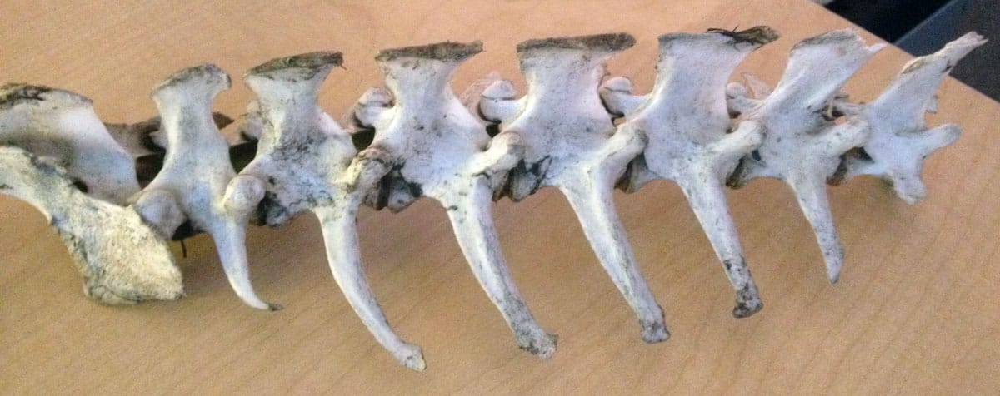
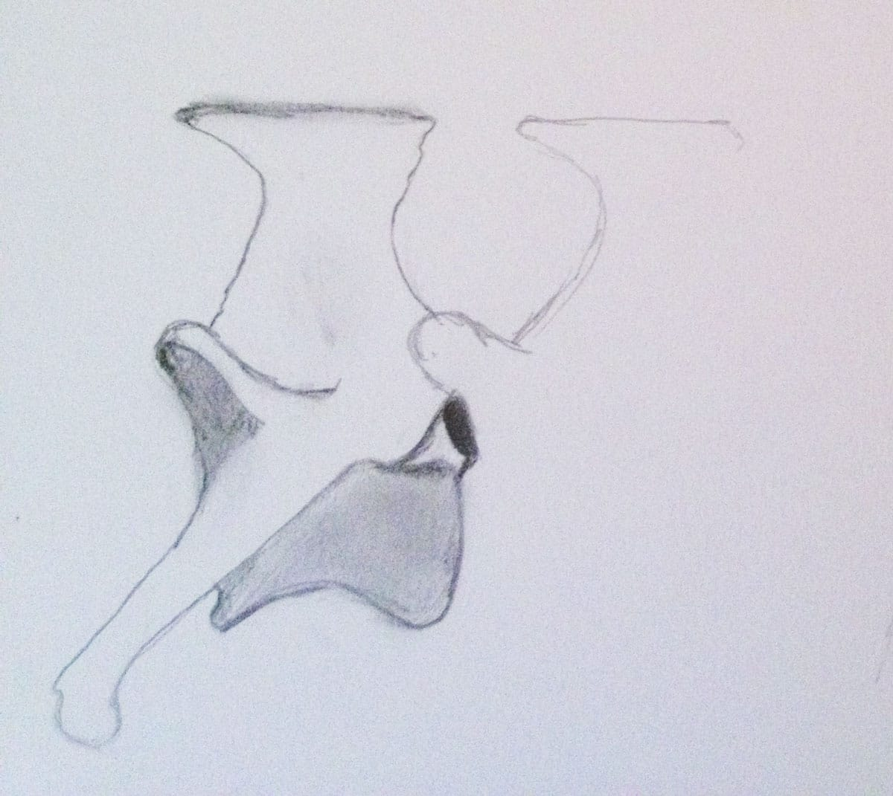
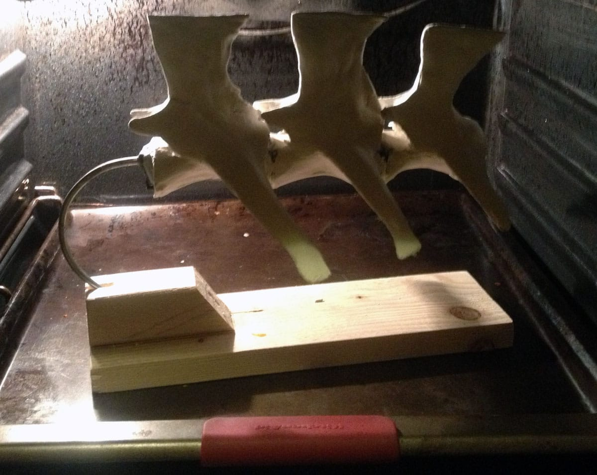
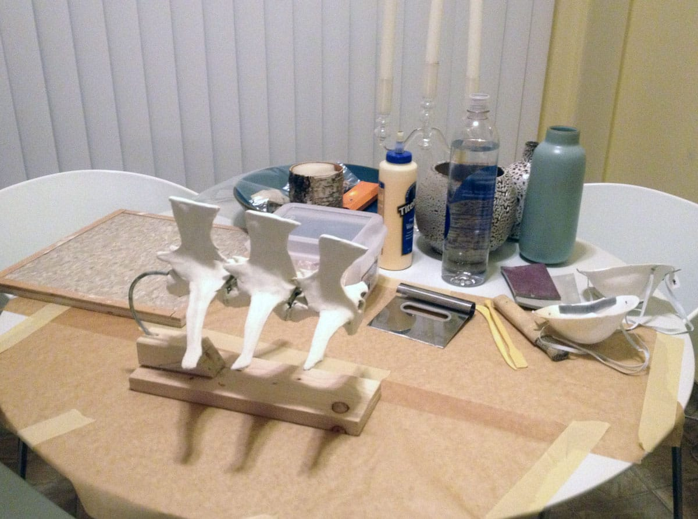
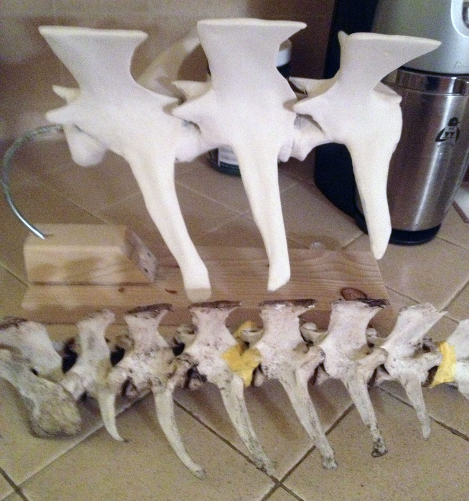

Bones - Process

The original bones from an unidentified animal.

These are preliminary sketches to get
familiar with the forms and structure of the bones.
I decided to scale the final piece twice as big as the original bones. In this way it would be easier to duplicate the intricacies of the bones but it would also give the piece more presence and to add to the conceptual nature of the work.

The basic form was built out of plumber’s epoxy and cardboard. Then I used
papier-mâché paste to form the bone shape over the cardboard. The paste needs to be baked to harden.

This was my makeshift workspace in my
kitchen. I used Wood Glue to attach other layers of the Papier-mâché forms.

I kept referring to the orginial bones to match them as closely as possible. I fashioned the small round parts of the bones out of Q-Tips and used shaved
pastels to create the illusion of depth and wear.